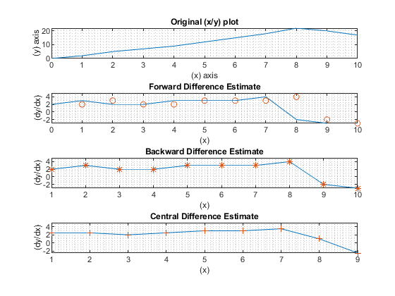

ENGR 133, Problem Set 06
Authored by: Andres Choque Authored on: 10/29/20
Contents
Problem 9.6
clear close all clc % Problem statement %{ A certain object moves with the velocity v(t) given in the table below. Determine the object's position x(t) at t = 10 s if x(0) = 3. time (s) 0 1 2 3 4 5 6 7 8 9 10 velocity (m/s) 0 2 5 7 9 12 15 18 22 20 17 %} % Pseudocode % Initialize variables % Perform calculations % Display results % Initialize variables t = 0:10; v = [0,2,5,7,9,12,15,18,22,20,17]; % Perform calculations d = zeros(1,length(t)); for k = 1:length(t)-1 d(k+1) = trapz(t(k:k+1),v(k:k+1))+d(k); end % Display results format bank header = (' Time Distance'); disp(header),disp([t',d'])
Time Distance
0 0
1.00 1.00
2.00 4.50
3.00 10.50
4.00 18.50
5.00 29.00
6.00 42.50
7.00 59.00
8.00 79.00
9.00 100.00
10.00 118.50
Problem 9.9
clear close all clc % Problem statement %{ A certain object has a mass of 100 kg and is acted on by a force f(t) = 500[2-e^(-t)sin(5pi*t)] N. The mass is at rest at t=0. Determine the object's velocity at t=5 s. %} % Pseudocode % Initialize variables % Perform calculations % Display results % Initialize variables m = 100; % Mass in kg v_0 = 0; % Initial velocity (rest) % Perform calculations g = @(t)(5*(2-exp(-t).*sin(5*pi*t))); % Force equation v_5 = integral(g,0,5); % Integral of force equation % Display results fprintf('In problem 9.9 the velocity at t = 5 is %4.2f m/s.\n',v_5)
In problem 9.9 the velocity at t = 5 is 49.68 m/s.
Problem 9.19
clear close all clc % Problem statement %{ Plot the estimate of the derivative dy/dx from the following data. Do this by using forward, backward, and central difference. Compare the results. x 0 1 2 3 4 5 6 7 8 9 10 y 0 2 5 7 9 12 15 18 22 20 17 %} % Pseudocode % Initialize variables % Perform calculations % Display results % Initialize variables x = 0:10; y = [0,2,5,7,9,12,15,18,22,20,17]; n = length(x); d1 = diff(y)./diff(x); d2 = (y(3:n)-y(1:n-2))./(x(3:n)-x(1:n-2)); % Perform calculations subplot(4,1,1) plot(x,y), grid minor, xlabel('(x) axis'), ylabel('(y) axis') title('Original (x/y) plot') % Forward difference subplot(4,1,2) plot(x(1:n-1),d1,x(2:n),d1,'o'),grid minor, xlabel('(x)'),ylabel('(dy/dx)') title('Forward Difference Estimate') % Backward Difference subplot(4,1,3) plot(x(2:n),d1,x(2:n),d1,'*'),grid minor, xlabel('(x)'),ylabel('(dy/dx)') title('Backward Difference Estimate') % Central Difference subplot(4,1,4) plot(x(2:n-1),d2,x(2:n-1),d2,'+'),grid minor, xlabel('(x)'),ylabel('(dy/dx)') title('Central Difference Estimate') % Display results fprintf('For problem 9.19 the most accurate estimate is the central difference\n')
For problem 9.19 the most accurate estimate is the central difference
Problem 9.20
clear close all clc % Problem presentation %{ At a relative maximum of a curve y(x), the slope dy/dx is zero. Use the following data to estimate the values of x and y that correspond to a maximum point. x 0 1 2 3 4 5 6 7 8 9 10 y 0 2 5 7 9 10 8 7 6 4 5 %} % Pseudocode % Initialize variables % Perform calculations % Display results % Initialize variables x = 0:10; y = [0,2,5,7,9,10,8,7,6,4,5]; x_2 = 1:10; % Perform calculations P = polyfit(x,y,4); Y = polyval(P,x); Y_2 = polyder(Y); roots = roots(Y_2); % Display results plot(Y_2,x_2),grid minor, xlabel('(x) values'), ylabel('(y) values') title('The Polynomial Curve') fprintf('The points of the graph where the slope is zero are: ') disp(roots)
The points of the graph where the slope is zero are: 56.02
0.35
0.35
-0.83
-0.83
-0.51
-0.51
-0.03
-0.03